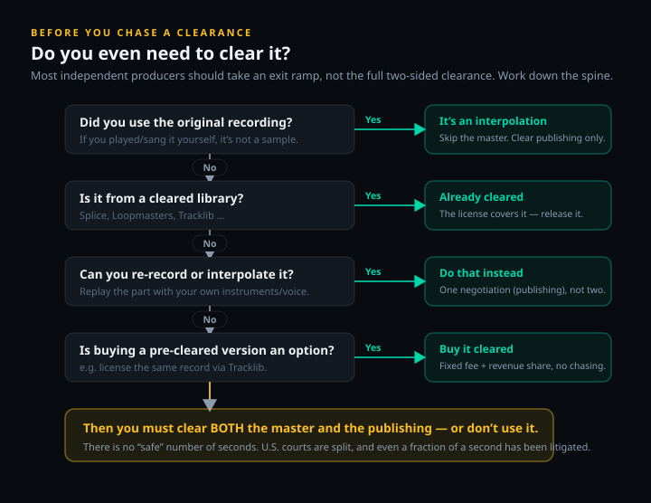
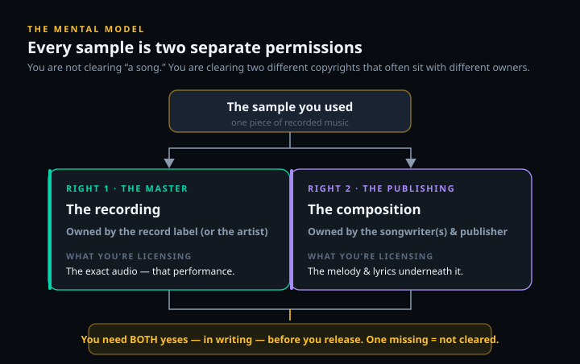

If you used someone else’s actual recording, you need two separate permissions before you release — the master (the recording) and the publishing (the song underneath it) — and they often sit with different owners. There is no number of seconds that makes a sample legal, and no amount of editing that turns it into yours. For most independent producers the honest answer is that the cheapest legal route isn’t a $500–$50,000 clearance at all — it’s to interpolate it, re-sing it, or buy it pre-cleared. This guide shows you which situation you’re in, what each path actually costs, and how to do it right.
Some links here (Tracklib, sample libraries) may be affiliate links; if you sign up through one we may earn a commission at no cost to you. It changes none of the guidance. Every cost figure below is an industry-reported range, not a statutory rate, and the legal points are sourced to U.S. case law and the Copyright Office — not invented.
There is no number of seconds that makes a sample legal. There is no “I changed it enough.” If you used someone else’s recording, you need two separate yeses before you release — and for most producers, the honest answer is that the cheapest legal path isn’t clearance at all. The producers who get burned are almost never the ones who couldn’t afford a clearance; they’re the ones who assumed they didn’t need one. So before you spend a dollar or send a single email, the first job is to work out which situation you’re actually in.
It helps to know what is actually at stake, because the downside is asymmetric. A clearance you skip might cost you nothing for a year and then cost you the song — a forced takedown, your streaming revenue redirected to someone else, or a demand for a share so large that the track stops being worth releasing. Sampling law was not built to be fair to bedroom producers; it was built around major-label catalogues and the lawyers who protect them. The good news is that the same body of law hands you several legitimate escape routes, and once you can see them clearly the whole thing stops feeling like a minefield and starts feeling like a checklist.
Do You Even Need to Clear It? The 30-Second Decision
Most conversations about sampling jump straight to “how do I get permission,” which skips the more useful question: do you need permission at all, or is there a cheaper way to get the same musical result legally? A surprising number of clearance problems dissolve the moment you realize you were never in the two-sided clearance lane to begin with. The decision below sorts that out in under a minute.
The pivot is simple. If you lifted the actual audio from an existing record — you dragged a WAV or an MP3 into your session and chopped it — you are sampling, and you are on the hook for both copyrights. If instead you recreated the part yourself, or you pulled it from a library that already sells it cleared, you are on a far shorter and cheaper road. The mistake is treating “I want this musical idea in my song” as automatically meaning “I must clear this record,” when re-playing the idea or buying a cleared version often gets you there for a fraction of the cost and effort.

Notice what the framework does not contain: any mention of length.
Two edge cases are worth naming because producers trip on them constantly. First, “it’s really old, so it must be free” is only half a truth: an old composition may have fallen into the public domain, but the specific recording you are sampling almost certainly has not, and under U.S. law older recordings are now protected on a long federal timeline of their own. A 1950s song can be free to re-record while the original 1950s record is still very much owned. Second, sampling something that itself contains a sample does not launder anything — if a track you love is built on an uncleared loop, sampling it simply inherits the same unresolved rights. When in doubt, trace the audio back to its true source before you build on it.
“I only used half a second” is not on the list because it does not change the legal answer, only the price you might eventually be asked to pay. We will come back to why that myth is so durable, and so dangerous, in a moment. First, the piece of the puzzle that everything else hangs on — the fact that a sample is never one permission, but two.The Two Permissions: Master vs Publishing
This is the single most misunderstood thing in sampling, and getting it wrong is what turns a manageable clearance into a lawsuit. When you sample a record, you are using two different copyrights at once, and they are owned, controlled and priced separately. You need a yes from both. Clearing one and ignoring the other gives you exactly zero protection — a half-cleared sample is an uncleared sample.

The first copyright is the master recording: the specific performance captured on tape or in the file — that drummer, that room, that take. The master is almost always owned by the record label that released it (for older catalogue, it may have been bought and sold several times), or by the artist if they put it out themselves. Clearing the master buys you the right to use that exact audio. The second copyright is the publishing, also called the composition: the underlying song — the melody, the chords, the lyrics — independent of any one recording. Publishing is owned by the songwriters and their publisher, and a single song can have several co-writers, each represented by a different publisher, each of whom may need to approve the deal. Our guide to how music publishing works unpacks that side in detail, and how music royalties work explains where the money you’ll be sharing actually comes from.
Here is why the split matters in practice and not just in theory. The two owners have completely different incentives, timelines and prices. A label might clear the master quickly for a flat fee but a publisher might hold out for a large share of your song — or the reverse. The famous, prominent samples are expensive precisely because both sides know the recording is doing heavy lifting in your track and price accordingly. This is why you hear of legendary samples that were either waved through for a token sum in the early days — before anyone understood their worth — or, today, negotiated into deals where the original artist ends up with a co-writing credit and a controlling share. The owners are not pricing the seconds of audio; they are pricing the role the sample plays in a song they can hear is built on it. Go in understanding that, and a high quote reads as information about how essential your sample is, not as an insult. And because the rights are independent, there is a powerful lever hiding in plain sight: if you can avoid using the original recording, you remove the master owner from the conversation entirely and only have to satisfy the publisher. That single move — which the law explicitly allows — is the basis for nearly every cheaper path later in this guide. But it only works if you first understand that the recording and the song are two different things you are borrowing.
Ownership is rarely as tidy as “one label, one publisher,” and the tangles are where timelines blow out. A master may have been sold two or three times since the record came out, so the company on the original sleeve no longer controls it. A composition with four co-writers can sit across four different publishers, each of whom has to sign off — and any one of them can quietly kill the deal by declining or simply never replying. Catalogue tied up in an artist’s estate adds executors and heirs to the chain. None of this is a reason to panic; it is a reason to do the ownership homework first, because the cost and the calendar of a clearance are set far more by how many people have to say yes than by how many seconds you used.
Why There’s No “Safe” Number of Seconds
Walk into any producer forum and someone will confidently tell you that six seconds, or four bars, or “less than 10 percent” is fine. It is the most persistent myth in music, and it is wrong. The U.S. Copyright Office puts it plainly in its own musician’s guidance: there is no hard-and-fast minimum amount of music you can use without getting permission. The length of your sample affects what a clearance might cost; it does not decide whether you need one.
The reason the myth refuses to die is that the law genuinely is unsettled — but unsettled in a way that makes short samples more dangerous, not less. The story starts in 1991, when a federal judge in Grand Upright Music v. Warner Bros. opened his ruling against Biz Markie with the words “Thou shalt not steal” and effectively ended the era of free, unlicensed sampling. The bright line came in 2005: in Bridgeport Music v. Dimension Films, the Sixth Circuit Court of Appeals held that any unauthorized use of a copyrighted sound recording is infringement, no matter how small, and issued the line every producer should memorize — “Get a license or do not sample.” Under Bridgeport, there is no “too short to matter” defense for a master at all.
Then the courts split. In 2016, the Ninth Circuit took the opposite view in VMG Salsoul v. Ciccone — the case over a roughly 0.23-second horn hit that Madonna’s “Vogue” borrowed from an earlier record — ruling that a snippet so trivial an ordinary listener wouldn’t recognize it can escape liability. So depending on which federal circuit you are sued in, the identical half-second sample is either automatically infringing (Sixth Circuit) or possibly fine (Ninth Circuit). That unresolved split is the risk. You do not get to choose which court hears the case — the rights holder does, and a well-advised one will file where the law favors them. Betting your release on the lenient reading is betting on a coin you don’t get to flip. Worse, the choice of court usually isn’t yours at all: a rights holder with national distribution can often pick a venue, and a well-advised one will file where the law leans their way. The industry even has a grim proverb for what triggers the fight — “get a hit, get a writ.” A sample sitting on an unheard track is unlikely to draw a lawsuit; the same sample on a song that starts charting is a target, because now there is money worth suing over. The danger scales with your success, which is exactly backwards from how most producers intuitively weigh the risk. This is the same fair-use grey zone we cover in music copyright and fair use, and the honest takeaway is identical: the uncertainty cuts against you, so the only reliable rule is to clear the sample or replace it.
How Much Does Sample Clearance Cost?
There is no statutory rate for sampling. Unlike a cover song, where the price is fixed by law, every sample clearance is a private negotiation, and the original owners can say no for any reason or no reason at all. What follows are industry-reported ranges — useful for budgeting and for sanity-checking a quote, but never a fixed price list.

The headline number most producers fixate on is the upfront fee, and the reported range is enormous: anywhere from a few hundred dollars for an obscure indie record to $50,000 or more for a famous song used prominently. Where you land depends on two things — how recognizable the original is, and how central the sample is to your track. A two-second background texture from a forgotten B-side is a different conversation from a four-bar hook off a classic single that your whole song is built around. On top of the upfront fee, the original owners usually take a royalty or publishing split, and this is where it gets expensive in a way the upfront fee hides: if the sample is effectively carrying your song, the original writers can demand 50 to 100 percent of your new track’s publishing. You can end up owning very little of a hit you made.
It helps to understand what actually moves the number, because it is not arbitrary. Two factors dominate: how recognizable the original is (a household-name hook commands more than a deep cut) and how load-bearing the sample is in your song (a fleeting texture is cheaper than the four bars your chorus rides on). A third factor is your track’s commercial potential — owners price against what they think you’ll earn. Be aware, too, that some publishers ask for a non-refundable advance or “consideration” fee just to review the request, money you don’t get back even if they say no. That is normal, and it is one more reason to be sure a sample is worth pursuing before you start spending to ask.
There are also the costs of the process itself. Tracking down owners and negotiating is slow and specialized, so many producers use a clearance agency as a middleman. Reported agency service fees run on the order of $350 to $975 per side — and note “per side”: the master and the publishing are billed separately, because they are separate negotiations. Expect the whole process to take two to six months, and expect it to cost meaningfully more if you have already released the track, because at that point you have lost all your leverage and the agency has more work to undo. Budget for clearance the way you budget for mastering: as a real line item you decide on before you commit, not a surprise you discover after. The timeline is its own cost. Two to six months is normal, and the clock is driven by the slowest party in the chain, not the fastest — one unresponsive co-publisher can stall everything while the others sit cleared and waiting. If you are working toward a release date, a campaign, or a sync deadline, start clearance the moment the track is finalized, not when the artwork is due. Producers routinely underestimate this and end up either delaying a release or, worse, putting it out uncleared and hoping — the single most expensive mistake in this whole guide. If you are also weighing the economics of selling your own beats rather than clearing other people’s records, our beat licensing guide covers that side of the ledger.
Step by Step: Clearing a Sample the Right Way
If you have decided the sample is worth it and you genuinely need the original recording, here is the process the clearance professionals actually follow. None of it is glamorous, and the order matters — doing step five before steps one through four is how producers end up paying premium prices or facing takedowns.
- Document exactly what you used. Before you contact anyone, write it all down: the original song title, artist, songwriters, producers, the label, the publisher, and the precise section you took with timestamps. You cannot clear what you cannot describe, and the owners will ask for specifics. This is also the record that protects you later if anything is questioned.
- Identify both rights holders. For the master, check the release credits, the streaming page, or a database like Discogs — for major-label records the master usually sits with Universal, Sony or Warner or a subsidiary. For the publishing, search the performing-rights databases (ASCAP, BMI, SESAC), the Mechanical Licensing Collective, or the Harry Fox Agency to find the writers and their publisher. Remember that multiple co-writers can mean multiple separate approvals.
- Send a formal clearance request to each. Contact the label’s licensing department for the master and the publisher for the composition — many labels have an online sample-clearance form. Include your track, exactly what you used, how prominently it features, and your release plans. Be honest about being an independent artist on a budget; clearance people deal with it constantly and candor often helps.
- Negotiate the fee, the split and the scope. Agree the upfront fee, the royalty or publishing split, and the scope of use (territories, formats, whether sync and video are included). Get the scope right now — a clearance for streaming audio does not automatically cover a music video, which needs its own sync permission.
- Get both clearances in writing before you release. Do not put the track out until you hold signed agreements from both owners. A verbal “sounds good” is not a license, an email that trails off is not a license, and “they never replied” is the opposite of permission. Written, signed, both sides — then release.
If even one of those steps stalls — a writer you can’t locate, a label that won’t engage, a publisher asking more than the track can bear — that is not a reason to release anyway and hope. It is the signal to step back to the decision tree and take one of the cheaper legal paths instead. Which is, for most producers reading this, the part of the guide that actually saves the song.
The slowest step is almost always the second one — finding everyone. Master ownership is usually a single phone call to a label’s licensing desk; publishing can fan out into a small research project, because the public databases sometimes disagree, list administrators rather than owners, or omit a co-writer entirely. Build a simple spreadsheet of every writer, their share, and their publisher before you send anything, and confirm the splits add up to 100 percent. If two databases conflict, the Mechanical Licensing Collective and the Harry Fox Agency are useful tie-breakers. Doing this groundwork up front is what separates a clearance that lands in two months from one that drifts for six.
The Cheaper Legal Paths Most Producers Should Take
Here is the part the distributor blogs bury under “find the owners and pay them.” For the large majority of independent producers, chasing a traditional two-sided clearance is the wrong move — not because it is illegal but because it is slow, expensive and uncertain when a cheaper, fully legal route gets you the same musical result. There are four, and they are ordered here roughly from cheapest to most involved.
| Path | What it clears | Rough cost | The trade-off |
|---|---|---|---|
| Royalty-free library | Both, by license | Subscription only | Non-exclusive; not the original record |
| Pre-cleared (Tracklib) | Both, pre-negotiated | From ~$50 + 2–20% rev share | Limited to the catalog; revenue share |
| Interpolation (re-play it) | Master skipped; publishing only | One negotiation | Must sound like your performance |
| Cover / re-record | Composition, via statutory license | 13.1¢ per copy (2026) | Audio-only; can’t alter the song |
Interpolation is the most powerful move and the most misunderstood. Instead of using the original recording, you re-play or re-sing the part yourself. Because you never touch the master, federal copyright law’s narrow protection for sound recordings simply doesn’t apply — a faithful re-recording that imitates the original is not the original. That removes the label from the equation entirely and leaves you with one negotiation, the publishing, instead of two. It is how a huge share of modern pop and hip-hop legally references older songs. Over the last few years interpolation has quietly become the default way mainstream records borrow, precisely because it sidesteps the hardest and most expensive negotiation — the master. A label that owns a classic recording can refuse to license it at any price; the publisher who controls the underlying song is usually more willing to deal, because a new hit built on their composition is a new royalty stream for them. Re-playing the part turns a possible “no” from the label into a likely “yes, for a share” from the publisher. For an independent producer, that shift — from begging a major label for a master to making a fair publishing deal — is often the difference between a song that can come out and one that can’t. But interpolation cuts the negotiation, not the risk: you still need the songwriters’ permission for the composition, and you cannot get around that by changing the melody “enough.” The cautionary tale is “Blurred Lines,” which wasn’t even a sample or a direct interpolation — it merely evoked the feel of a Marvin Gaye record — and still cost its writers around $5 million plus 50 percent of future royalties. Re-playing a part removes the master clearance; it does not remove the need to respect the song.
It is worth knowing where the composition right stops, because the “Blurred Lines” era pushed the boundary into contested ground. Melody and lyrics are squarely protected; a recognizable melodic or lyrical lift needs clearing whether you sampled it or replayed it. A bare chord progression or a general groove, by contrast, has historically not been ownable on its own — which is why some high-profile “sound-alike” suits have failed even as others succeeded. That grey zone is genuinely unsettled, so the practical rule for interpolation is the same as for sampling: if an ordinary listener would clearly recognize the part as that song, clear the publishing; don’t rely on having changed it enough.
The cover or full re-recording path is the one place the law does fix the price. If you want to record your own version of an existing song, you are entitled to a compulsory mechanical license — the songwriter cannot refuse you — at the statutory rate, which for 2026 is 13.1 cents per copy sold or downloaded (rising annually under the current Copyright Royalty Board schedule, and far above the old 9.1-cent rate that stood frozen for fifteen years). Services like Easy Song will obtain that license for you for a modest fee. The catch: a compulsory mechanical covers audio only and does not let you change the basic melody or fundamental character of the song, and it does not cover video — a YouTube version still needs a separate sync license. For straightforward releases, though, it is the cleanest, most predictable cost in this entire guide. The mechanics overlap with the broader picture in our music licensing explainer.
The pre-cleared path is the modern game-changer, and the clearest example is Tracklib — a licensed service (Sony is among its backers) that has pre-negotiated rights on a catalog of more than 100,000 real records, so you can sample an actual song and clear it in a few clicks instead of chasing owners for months. Pricing is transparent: on the lower subscription tier (from about $14.99 a month) most of the catalog clears for roughly a $50 fee plus a 2 to 20 percent revenue share depending on how much of the song you use, while higher tiers fold unlimited clearance into the subscription with no upfront fee. You can sample up to 60 seconds of a track per license, and you agree to share a slice of your release’s revenue and publishing with the original owners — a fair, fast model that simply did not exist a decade ago. Finally, the royalty-free libraries — Splice, Loopmasters and the like — are the “no clearance needed” path: their samples are cleared by the license terms, royalty-free and yours to release commercially. Two honest caveats keep producers out of trouble, though. The licenses are non-exclusive, so other producers can use the very same loop; and because a recognizable royalty-free vocal or melodic loop used in full can trip an automated copyright-detection system, “royalty-free” does not always mean “claim-free” on YouTube. Keep the certified license your library issues, and you have your paper trail.
One more wrinkle on the royalty-free path catches people at distribution rather than creation. Some stores and monetization programs want exclusive rights to all of a track’s source material, which a non-exclusive library sample by definition can’t give — so a beat built entirely from shared loops may be ineligible for certain exclusive-content or sync programs even though it is perfectly legal to release. If you intend to pitch a track for sync or sell it as an exclusive, read both the library’s license and the destination platform’s requirements before you build on shared sounds. For ordinary streaming releases, none of this is a problem; it only bites at the exclusive-rights edge of the business.
What Happens If You Don’t Clear It
It is worth being honest rather than alarmist about enforcement, because the scare stories and the shrugs are both wrong. The reality sits in between. Plenty of uncleared tracks exist on the internet and nothing visible happens to them for a long time — right up until something does, and by then the producer has the least leverage they will ever have.
The first line of enforcement is automated. YouTube’s Content ID fingerprints audio and can flag a recognizable sample automatically, redirecting your monetization to the rights holder or blocking the video outright; this runs whether or not you disclosed anything. SoundCloud’s detection is weaker, but rights holders can and do file manual takedown notices there and everywhere else. The pattern is consistent across platforms: the more successful your track becomes, the more likely it is to be noticed, because attention is exactly what draws a rights holder’s eye. An uncleared sample is therefore a special kind of liability — one that stays dormant while the track is small and detonates precisely when the track starts to matter.
The mechanics of what actually happens are worth picturing. On most platforms an automated match doesn’t delete your track on day one; it quietly redirects the monetization to whoever the system thinks owns the sample, so you can be earning streams while none of the money reaches you. A manual claim from a label can escalate to a takedown or a demand letter. And because clearing after a complaint means negotiating from zero leverage, the bill at that point dwarfs what the same clearance would have cost while the track was still unreleased. The simple operating rule that falls out of all this: if you ever intend to monetize a track — streaming, sync, anything — clear the sample first. The free-to-stream-and-see approach is only “free” until the track works.
Two principles follow, and they are not negotiable. First, no response is not permission. If you emailed a label and never heard back, you have nothing — silence grants you no rights, and “I tried to reach them” is not a defense. Second, get it in writing before release. A verbal yes can evaporate, and clearing after the fact costs more and gives the owner every reason to demand a punitive share rather than a fair one. If a track is worth releasing, it is worth clearing before, not after.
None of this means an uncleared sample guarantees catastrophe — plenty never get caught, and rights holders pick their battles. But “probably fine” is a strange foundation to build a release on, especially when the legitimate alternatives are this accessible. The producers who sleep well are not the ones who gambled and won; they are the ones who either cleared what mattered or built the track so it never needed clearing in the first place.
When a Sample Is Worth Fighting For — and When to Walk Away
Not every sample deserves a clearance campaign. The judgment call is mostly economic and creative, not legal. Ask whether this exact recording is irreplaceable to the song or whether you are attached to the musical idea, which you could re-play. Ask whether the track’s likely earnings could ever justify a four-figure fee plus a publishing split — for a release that will realistically make a few hundred dollars, the answer is almost always no, and an interpolation or a pre-cleared alternative is the obvious move. Ask, too, whether you can even reach the owners and whether they are the type to say yes; some catalogue is locked up, contested, or controlled by estates that simply decline.
Walk away from the original recording when the math doesn’t work, and you will almost always find that re-playing the part, licensing a similar record through a pre-cleared service, or building the idea from a royalty-free library gets you 95 percent of the magic with none of the exposure. Fight for the clearance when the specific recording is genuinely the soul of the track and the release is big enough to carry the cost — a sync placement, a label release, anything that requires you to control 100 percent of your rights. The professional habit worth building is to decide this before you fall in love with an uncleared sample, not after.
There is a business reason to be strict about this that goes beyond avoiding lawsuits. The most lucrative opportunities — a song in a film, a show, an ad — almost always require you to be “one-stop,” meaning you control 100 percent of the rights and can license the whole track with a single signature. An uncleared sample makes you not one-stop, and a music supervisor on a deadline will simply skip your song for one they can clear cleanly, no matter how good yours is. So an uncleared sample doesn’t only expose you to downside; it quietly closes the door on the upside that pays the most. Clearing it — or building the track so it never needed clearing — keeps every door open.
This is exactly the kind of call we are building tools to make less painful — if you want to hear when MPW’s clearance tooling lands, the Producer’s Briefing is where we’ll announce it. In the meantime, once your track is clean, make sure the rest of your rights are in order: our guides on how to register your music and how to copyright your music cover the steps that protect what you created.
Last reviewed June 2026. The cost figures here are industry-reported ranges, not statutory rates and not first-party MPW measurements — they are compiled from clearance agencies, distributor and service pricing (Tracklib, Splice, Easy Song), and published industry guides, and they move. The only fixed figure is the 13.1¢ (2026) statutory mechanical rate set by the Copyright Royalty Board. Legal points are sourced to the U.S. Copyright Office and to Grand Upright (1991), Bridgeport v. Dimension Films (6th Cir. 2005) and VMG Salsoul v. Ciccone (9th Cir. 2016). This is general information, not legal advice; for a high-stakes clearance, consult a music attorney.
Put It Into Practice: 3 Exercises
- Pick a song you’d love to sample. Find the master owner from the release credits, the streaming page, or Discogs.
- Find the publishing owner by searching the song title in the ASCAP, BMI or SESAC database — note every co-writer and publisher listed.
- Write down how many separate approvals a real clearance would require. If there are four co-writers, that can be four publisher yeses on top of the master.
- Write a short, specific request to a label’s licensing department: the original title and artist, the exact section and timestamps you used, and how prominently it features in your track.
- State your release plans and that you’re an independent artist — ask what the upfront fee and split would look like.
- Write the matching version for the publisher. Notice how the two asks differ, because you’re licensing two different things.
- Take the sampled part and re-record it yourself — replay the melody, re-sing the line, rebuild the chords — without using any of the original audio.
- List what you no longer need to clear (the master) and what you still do (the publishing).
- A/B your re-recording against the original and decide honestly whether it carries the song. If it does, you’ve just turned a two-sided clearance into a one-sided one — and saved yourself the most expensive negotiation.
Frequently Asked Questions
Almost always, yes. Pitching, chopping, filtering or reversing a sample doesn’t remove the original copyright — it’s still a copy of someone else’s recording and composition. There is no amount of editing that legally converts a sample into your own work. The only ways to drop a clearance are to re-record the part yourself (interpolation, which removes the master but not the publishing) or to use a sample that’s already cleared by license, such as a royalty-free library or a pre-cleared service.
No. There’s no legal safe-harbor length. U.S. courts are genuinely split: the Sixth Circuit held in Bridgeport v. Dimension Films that any unauthorized use of a recording infringes, however short — “get a license or do not sample” — while the Ninth Circuit in VMG Salsoul v. Ciccone found a 0.23-second horn hit in Madonna’s “Vogue” too trivial to infringe. Because you can’t control which circuit a rights holder sues you in, the only reliable rule is to clear it or not use it. The U.S. Copyright Office itself says there’s no minimum amount you can use without permission.
A sample uses two separate copyrights. The master is the actual recording, usually owned by the record label or artist; clearing it gives you the right to use that specific audio. The publishing is the underlying composition — the melody and lyrics — owned by the songwriters and their publisher; clearing it gives you the right to use the song itself. You need both. Getting one without the other doesn’t protect you.
There’s no statutory rate; it’s negotiated. Industry-reported upfront fees range from a few hundred dollars for an indie record to $50,000 or more for a famous, prominently used one, and the original owners often take a royalty or publishing split on top — sometimes 50 to 100 percent of the new song’s publishing if the sample carries the song. Clearance agencies report service fees of roughly $350 to $975 per side (master and publishing billed separately). Clearing after release costs more. These are reported ranges, not fixed prices.
Interpolation means re-recording part of a song yourself instead of using the original recording. Because you’re not copying the master, you skip master clearance entirely and only need to clear the publishing — one negotiation instead of two. It doesn’t remove legal risk, though: you still need the publishing owner’s permission, and you can’t escape it by changing the melody “enough.” “Blurred Lines” wasn’t even a sample and still cost its writers around $5 million plus half of future royalties.
Yes. Tracklib is a licensed service — backed by Sony among others — that has pre-negotiated rights for a catalog of real records. You pay a clearance fee or a subscription, register your usage, and agree to share a percentage of your track’s revenue and publishing with the original owners. On its lower tier, most of the catalog clears for about a $50 fee plus a 2 to 20 percent revenue share depending on how much you use; higher tiers include unlimited clearance with no upfront fee. You can sample up to 60 seconds of a song per license.
No response is not permission. Silence grants you nothing, and releasing on the assumption that “they never replied” leaves you fully exposed. Follow up, try a different contact at the label or publisher, or use a music attorney or clearance agency to reach them. If you genuinely can’t get a yes, don’t release the track with the sample — take one of the cheaper legal paths instead, such as interpolation or a pre-cleared alternative.
You shouldn’t. Technically people do, but it’s the most expensive and risky path: clearance agencies charge higher fees once a track is already out, YouTube’s Content ID can flag it automatically, and a rights holder who finds an uncleared hit has every incentive to demand a large share or a takedown rather than a fair upfront deal. Clear before you release — the leverage and the price are both far better while the track is still unreleased.